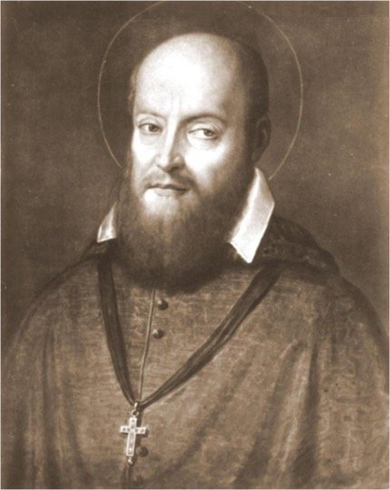

St. Francis de Sales, born on August 21, 1567, in Thorens-Glières (now part of France), came from a noble family and was the eldest of six children. Though he studied law at the University of Padua to please his father, he experienced a deep spiritual awakening and chose to serve God instead of pursuing a legal career. Ordained a priest in 1593 despite his family's hopes for him to marry, he quickly gained a reputation for his gentle spirit, persuasive preaching, and commitment to helping people grow in faith. Appointed Bishop of Geneva in 1602 during the Protestant Reformation, he led many back to Catholicism with kindness and patience rather than force, earning him the title “Gentleman Saint.” He believed holiness was possible for everyone, regardless of their life situation—a belief reflected in his renowned book Introduction to the Devout Life (1609), which remains a spiritual classic. Alongside St. Jane Frances de Chantal, he co-founded the Order of the Visitation, promoting a humble and active spiritual life for women. Despite chronic illness, he tirelessly preached, wrote, and offered guidance through letters, emphasizing trust in God and the importance of daily devotion. He died on December 28, 1622, was canonized in 1665, and declared a Doctor of the Church in 1877. As the patron saint of writers, journalists, and the Catholic press, his legacy continues to inspire, especially in our Kattuwa Church parish, where his life of gentleness, faith, and service serves as a guiding example.